'BYTE' passes commentary on surveillance, identity and anonymity, and monitoring techniques. Willing passers-by have their face photographed by an on-site camera and monitor, and this photograph is then sent to a publicly visible screen where it is combined with previous participants into a single unrecognizeable conglomerate face. Throughout the process the participant will see their identity transformed into one entry amongst a mass of others - much like the data that is collected from our digital actions every day.
The colour palette for BTYE was chosen to reflect the techno/matrix theme of the piece. It follows a simple colour palette of black, white, and 2 seperate shades of neon green.
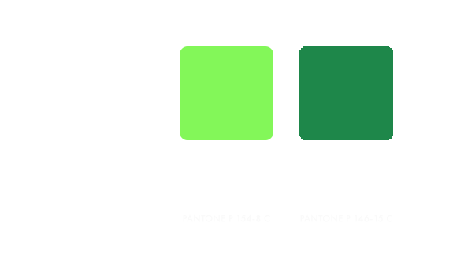The primary (title) font to be used in this project is 'VT323'. It is designed by Peter Hull and sourced from Google fonts. This typeface also reflects the matrix style and is a pixelated, 'digital' font.
The secondary (body) font is 'Futura PT'. This is a simple and legible sans-serif font which is modern and compliments the primary font.
The imagery used for the project will be minimal to compliment the simple matrix/terminal aesthetic of the project. One image that may be used sparingly (e.g. on the installation 'home' screen or on a banner used at the site for promotion) is the following pixelated face:
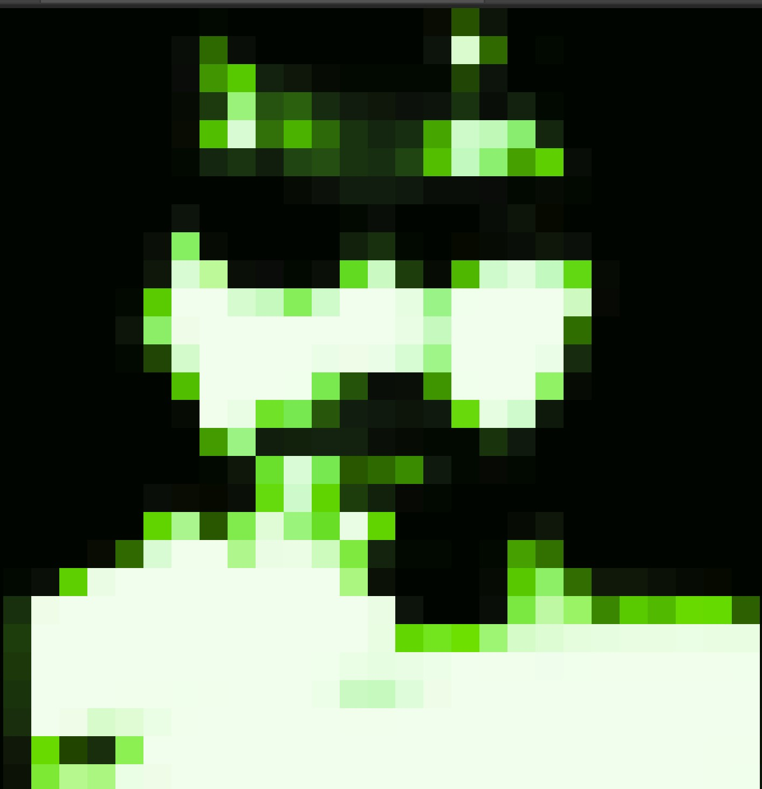The face adds a slightly more sinister tone to the project. This reflects the project's commentary on the mass collection of personal identity data, which users should be wary of and view as a potential threat to avoid nonchalant data-sharing with major companies.
The installation is set up in an accessible and popular public space. A brief description is displayed to educate the visitor on the installation. The user interacts with an interactive small screen at chest height, where they are prompted to capture a photo of their face to be uploaded to the 'conglomerate screen' - a large billboard screen displayed above the installation site. Once the photo is successfully taken, the user will see the content of the large screen change as parts of their features are added to the single anonymous mosaic face. At this point they are prompted to allow another user to interact with the piece.
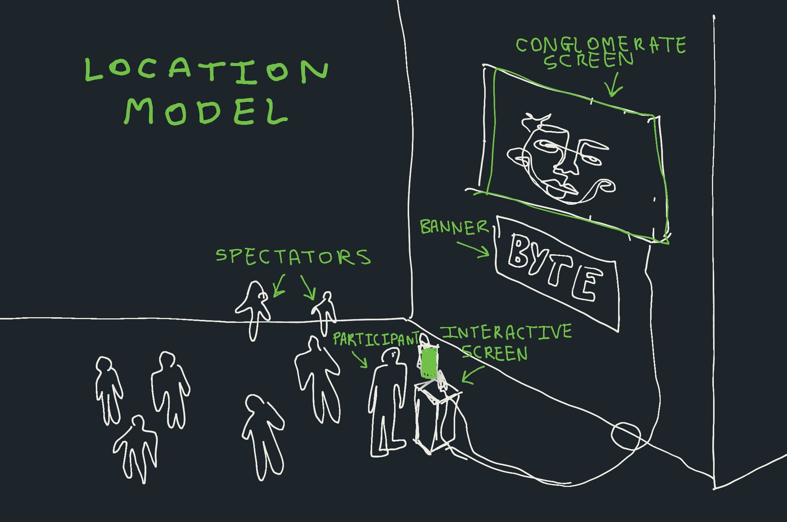The curious user steps up to the screen interface, where they begin to interact with the project. Their participation is viewed by other passers-by who may also wish to take part in the peice.
The user navigates through the following four-stage process:
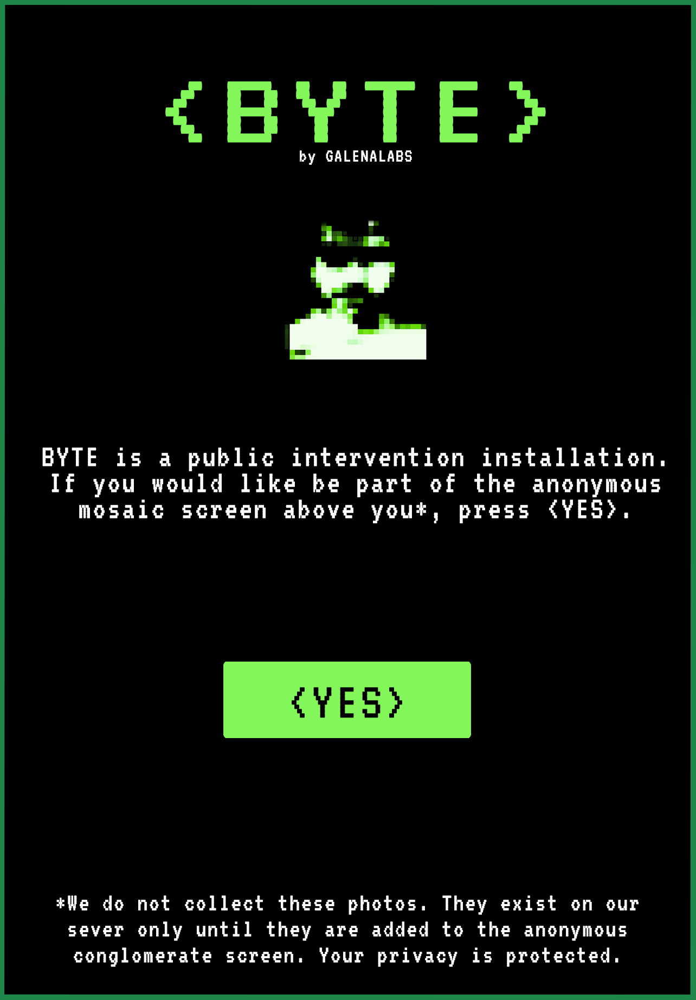 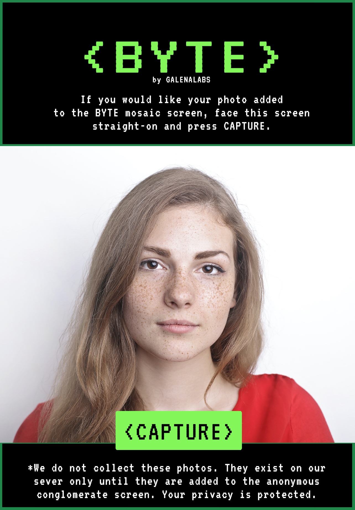 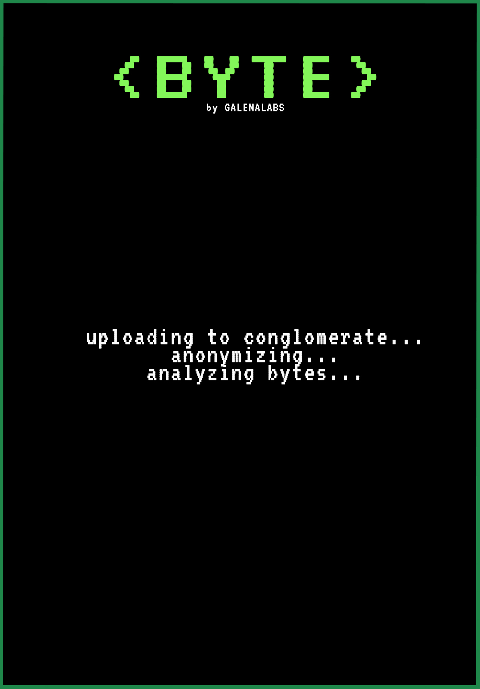 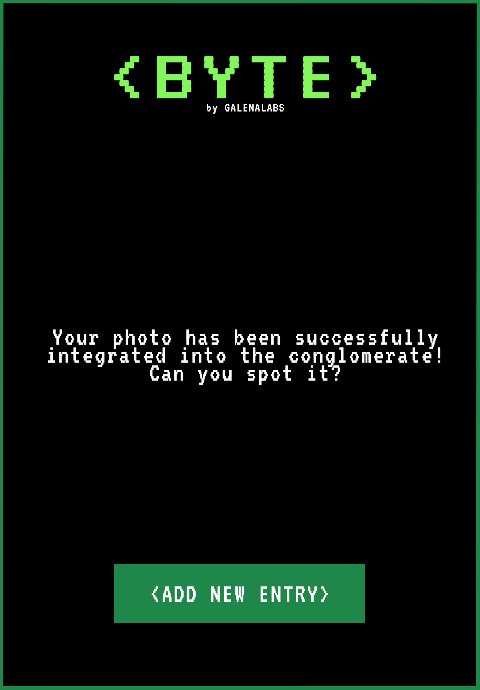
Peices of their image are then decontextualized, spliced, and then integrated into the conglomerate face on the large screen. This marks the end of this user's participation, but subsequent visitors can continue to change the end result infinitely.
Put simply, the process of the installation is as follows:
- Visitor becomes participant
- Original user image is taken
- Image is spliced and integrated into the mosaic
- Process is confirmed, overhead image is updated and a new conversion is encouraged
Following their interaction with BYTE, participants are lead to question how anonymous their data really is in terms of the global network, and whether they can stil maintain individuality in the context of mass data collection.
The project is inspired by the Surveillance Art movement as a whole, particularly those that encouage users to take part and change the appearance of the piece. A particular influence is David Rokeby's artwork Gathering (2014), which used a software program to recontextualize live footage of people outside the gallery space into a series of composite images displayed on floor-to-ceiling screens.
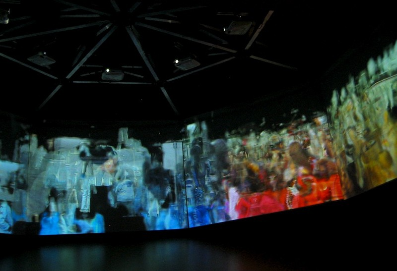David Rokeby, Gathering , 2004. Video installation. Image courtesy of the artist.
Another precedent for the project is Exhausting a Crowd (Since 2015). On this website, visitors can add their own captions/dialogue balloons to passersby recorded on public surveillance footage. They are able to partake in the peice anonymously, and other users can observe their contributions. The project is a lighthearted commentary on surveillance and web interactivity, and is still available for users to play with.
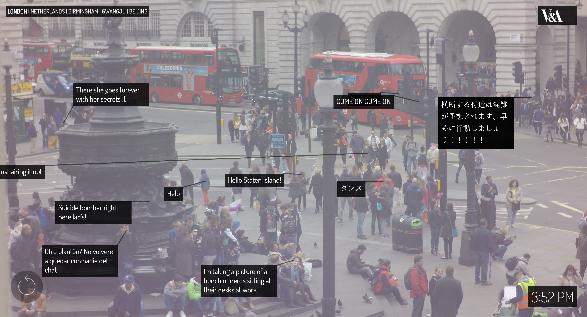Kyle Macdonald, Exhausting a Crowd , 2015-present. Interactive website. Image is a website screenshot.
Megapixels inspired the facial-recognition aspect of BYTE, particularly with regards to how it references other faces. It uses a custom built facial recognition software to compare your face with millions of others in a database, and provides you with an overall percentage match to other faces.
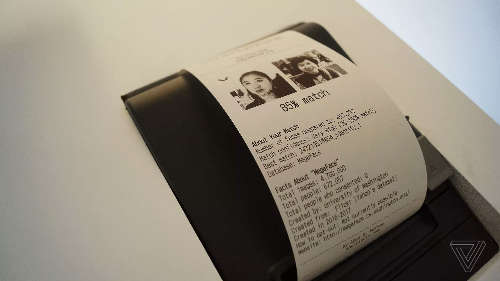 Adam Harvey, Megapixels , date unknown. Interactive installation. Image is a screen shot of this article.